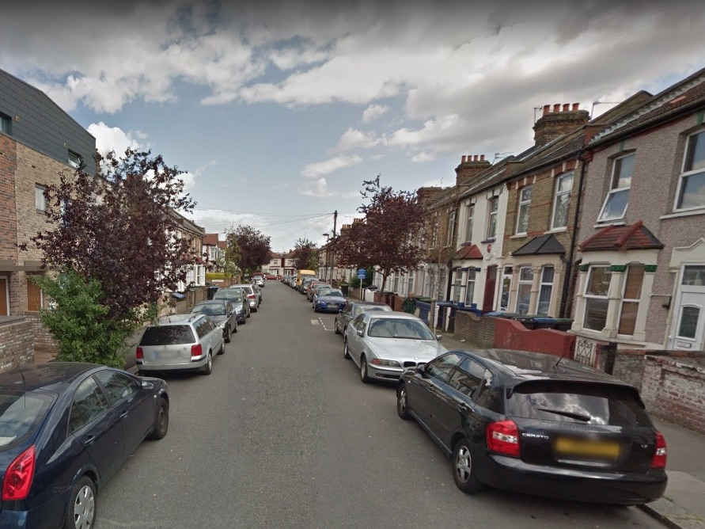
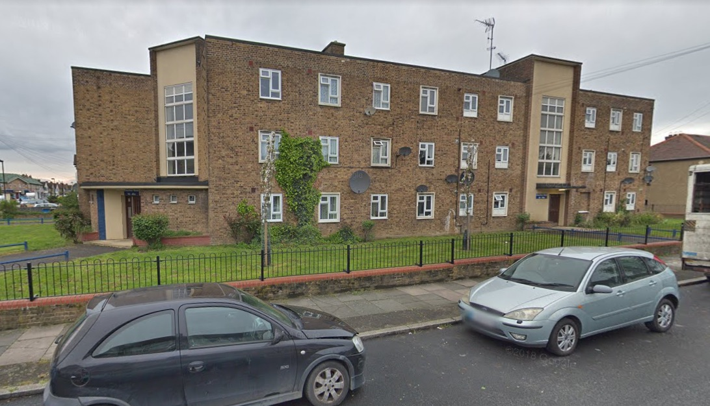
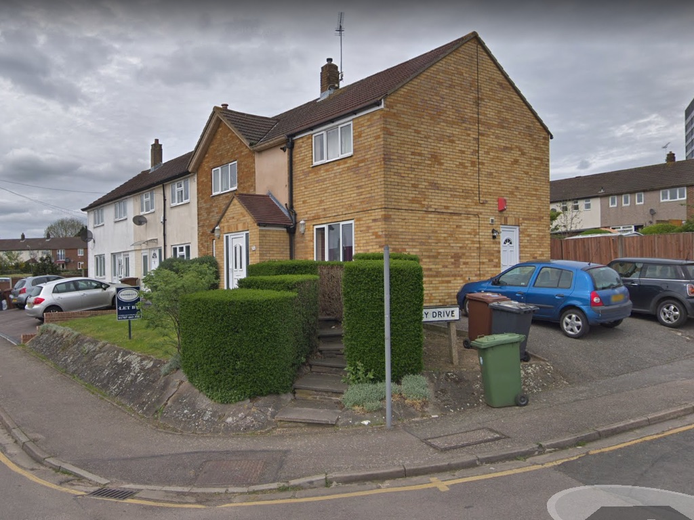
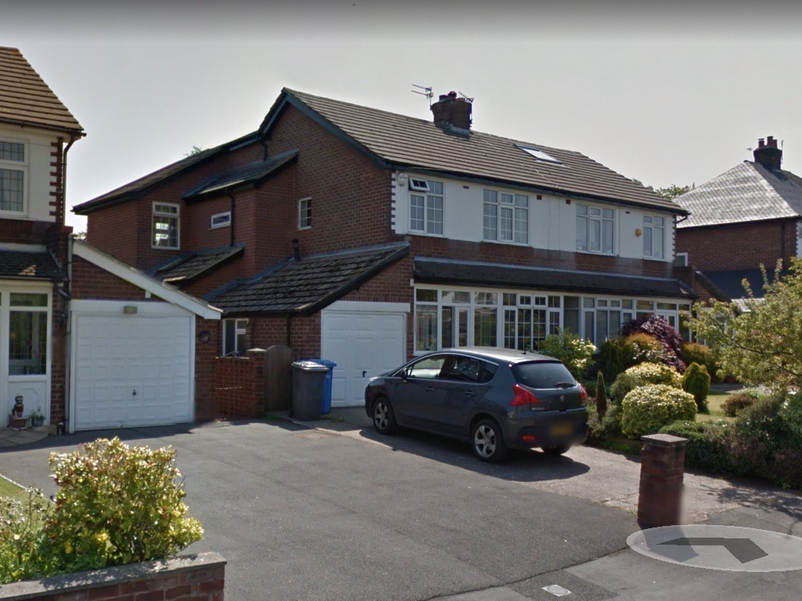
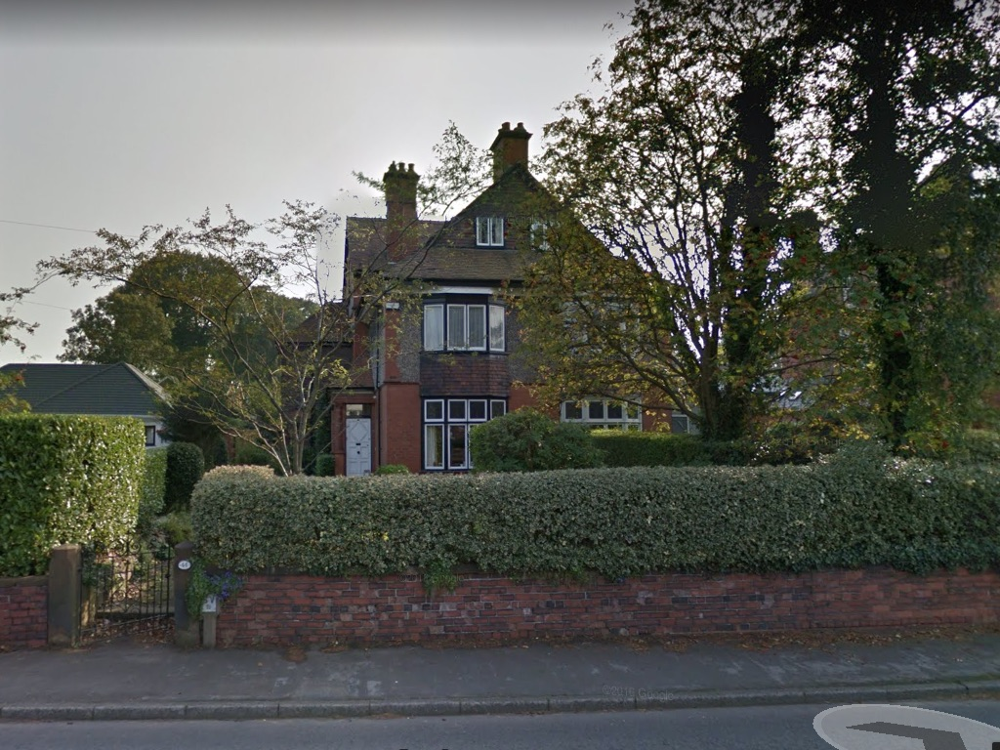
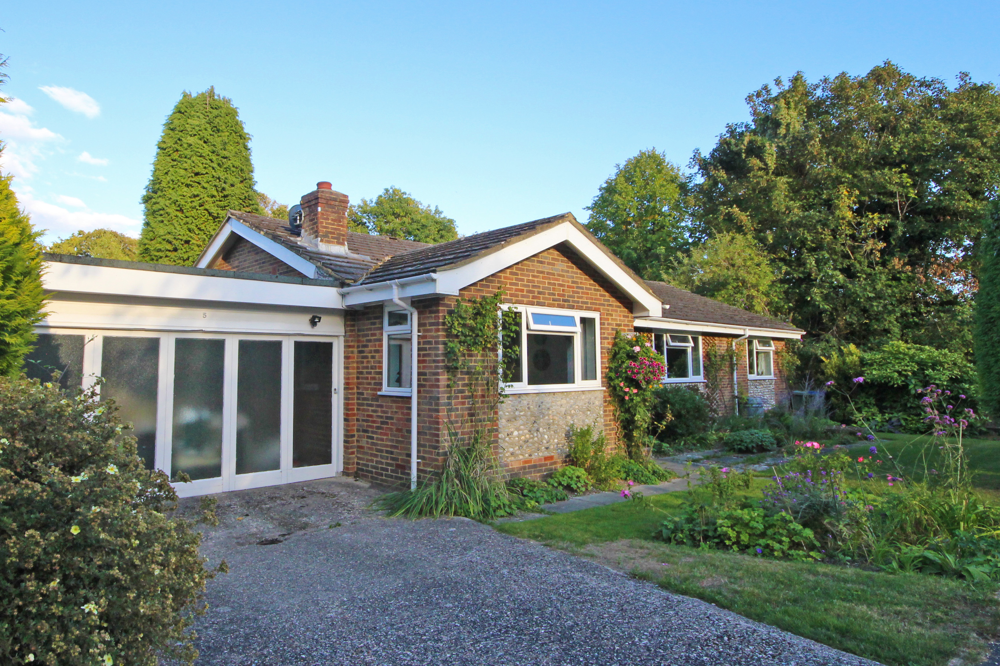

Places I've Lived
This is really just a list of places where I've lived, together with a note about each and perhaps a photo if one is available. Naturally we'll start at the beginning and work through in chronological order. I was born in North Middlesex Hospital in Edmonton. I think the hospital still exists, but the county of Middlesex was mainly absormed by Greater London in 1965.
| Alpha Road, Edmonton |
|---|
| I can remember my grand parents living in Alpha Road when I was a boy, but it seems that when I was born we had a flat in one of the houses in Alpha Road. It was a street of mailly terraced victorian houses and I belive that we had an upstairs flat in one of them. It seems that the owner of the house got married and his wife did not want tenanats, so took us to court to get us evicted. |
| Whitefield Road, Cheshunt, Hertfordshire |
 I can only assume that we moved from Alpha Road to a 'council house' in Cheshunt. Certainly I started school in Cheshunt and my brother Alan was born there. We had a maisonette in the form of the top two floors in a three story block. My only real recollection of the place is that it had a tiled floor. We had pet mice, which would escape and go under the sofa. So we would use a long broom handle to slide them across the floor into someone's waiting hands. I can only assume that we moved from Alpha Road to a 'council house' in Cheshunt. Certainly I started school in Cheshunt and my brother Alan was born there. We had a maisonette in the form of the top two floors in a three story block. My only real recollection of the place is that it had a tiled floor. We had pet mice, which would escape and go under the sofa. So we would use a long broom handle to slide them across the floor into someone's waiting hands. |
| Chalton Road, Edmonton |
| Cheshunt was a pleasant place, but walking anywhere locally generally meant crossing a busy road, it was a long way from where Dad was working and Mum felt it was a long way from her mother in Edmonton. So we arranged for a transfer to a council flat in Edmonton. Again memories are scant, but I do recall playing with friends, building model aircraft from Kielcraft kits with Dad, flying them from the window and them crashing into the communal washing line posts below. I also remember my Mother taking Alan to the shops (in his pram) and leaving me alone at home. This frightened me (and was probably illegal, even at that time) until I was bought jigsaw puzzles to do while she was out. |
| 34 Ashwood Road, Potters Bar, Hertfordshire |
| It's probably true to say that most of my upbringing took place here. When we lived here there was no extension on the end, it was just a two-bedroom end of terrace house, and there was an old oak tree where the blue car is now. Dad planted the privit hedge up both sides of the steps, mainly to prevent people cutting the corner off by leaping up or down the front wall and walking across the steps. The previous occupants had lived in the same block of flats as us in Edmonton and wanted to move back. Since this house was on the Edmonton council estate we were able to do an exchange. I must have been eight or nine when we moved here and stayed until I was 18 and went to university.
Later, after Alan and I were married and in our own houses, the Concervative government introduced a 'right to buy' policy for council tennants. We may not have agreed with the policy, but we persuaded Mum and Dad to buy the house at a very discounted price. |
| 10 Clark Street, Morecambe, Lancashire |
| In September 1969 I took up temporary residence in a guest house in Morecambe for my first year at university. I had traveled to Morecambe by train, carrying my worldly possesions, or most of them. One item I didn't take, for some reason, was my briefcase, so I wrote home asking them to send it to me. Then this very heavy parcel arrived. My Mother had put a bread pudding inside the briefcase! I think Mrs A (our landlady) took this as a reflection on her cooking. All sharing one bathroom meant that, when possible, I would use a shower that for some reason was in the physics department. |
| 24A Clarendon Road, Morecambe, Lancashire |
| Being in Clark Street enabled us to find our feet, travelling by bus into Lancaster each day. However, living in your own (rented) flat was much more appealing. So three of us (Dick, Paddy and I) found a basement flat in a house in a Victorian terrace. There were three flats and we had to share a bathroom on the second floor. I played hockey and squash quite often so I would use the showers in the sport centre. I had worked during the summer vacation and saved up enough to buy a car which, during cold spells, spent most of its time park in the road. We stayed in that flat for two years, with one person deciding to move out after a while, which suited us fine. |
| 7 Melbourne Lane, Breedon-on-the-Hill, Derbyshire |
| Then, in September 1969, it was time for work. I'd turned down two offers of a PhD place at Lancaster and a place on a nuclear engineering MSc couse at Birmingham University and accepted an offer as a graduate apprentice at Rolls Royce and Associates (designers of nuclear submarine power plants) in Derby. So for a short time I was back in digs, a short drive out of Derby. |
| The Royal Navel College, Greenwich |
| After Christmas our small band of graduate apprentices (five of us) were sent on a course at the navel college. The course was to teach sub-mariner officers, who would be working at the front end of a nuclear submarine, what went on at the back end, the reactor and propulsion systems. So for about three months we ae our meals in the painted hall, served by white-gloved waiters and attended some splendid formal dinners and a ball. |
| 14 Brackens Lane, Alverston, Derby |
| Then it was back to Derby and, after a short stay in a guest house, four of us (Colin Welsh, John Starkey, Chris Williams and I) rented a house for a year, not too far from where we were working. I had thought of buying a house, since they were very cheap in that area, but it was so easy to rent. |
| 37 Wilmington Avenue, Alveston, Derby |
| Just around the corner we discoverd a new development, run by a housing association. People could rent a house from the association and later buy the house if they wanted. Three of us (we couldn't live with Chris any more) were only interested in renting, but laid turf in the small back garden, built a bookcase from bricks and planks of wood and I painted the floorboards around a carpet square. This house was unfurnished, so we had to aquire furniture from our parents or wherever. It was while living here that I met Angela, who was living in a shared flat in Litchfield, about three quarters of an hour drive away. WhenI moved out, my place was taken by John Taylor. |
| 115 Mill Hill Lane, Derby |
| We married on August 5th 1972 and had decided to by a new-build house in Little Eaton. However, the build was late. In fact, at one point the build went backwards. We would go to the site each weekend and one week found that the stairs, that were installed the week before, had been removed. So we needed to find some temporary accommodation. We found a flat in one of the back streets of Derby. The house was being converted into flats by a hard-working Eastern European gentleman who was doing most of the work himself. We stayed there until our house in Little Eaton was complete. |
| Plot 4 Barley Close Terrace, Little Eaton, Derbyshire |
 The photo, courtesy of Google Streetview, looks very much as it did when we moved out in 1976. At that age we were quite enthusiastic. We laid a 'floating' wooden floor in the sitting room and terraced the small, steep back garden using sandstone rocks salvaged from the building site. I also salvaged a large wooden plank (a first floor joist) that made the top of a work bench that we still have. We also bought the teak boxes that we still have on our sitting room wall. The photo, courtesy of Google Streetview, looks very much as it did when we moved out in 1976. At that age we were quite enthusiastic. We laid a 'floating' wooden floor in the sitting room and terraced the small, steep back garden using sandstone rocks salvaged from the building site. I also salvaged a large wooden plank (a first floor joist) that made the top of a work bench that we still have. We also bought the teak boxes that we still have on our sitting room wall. |
| 31 Highfield Road, Lymm, Cheshire |
|  |
| 44 Higher Lane, Lymm, Cheshire |
|  |
| 5 Kingsmead Close, Bramber, Steyning, West Sussex |
|  |
| 31 Penlands Vale, Steyning, West Sussex |
 |